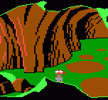
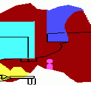

This is best explained graphically:
 
Here you can see both the visual and priority screens. As you can see, ego has a priority of 13 (magenta) but the bottom part of ego is on a part of the screen with a priority of 15 (white). Thus, that part of ego is not drawn. The floor and some of the walls have a priority of 4 (red) because nothing needs to be drawn behind them.
If the priority of an object and the part of the screen it is on are the same, the object goes on top. If two objects that have the same priority overlap, the object with the higher number goes on top.
Normally, the priority of an object is determined by its vertical position on screen:
Priority Y Range ----------------- 4 0-47 5 48-59 6 60-71 7 72-83 8 84-95 9 96-107 10 108-119 11 120-131 12 132-143 13 144-155 14 156-167 15 -(note that 167 is the max. Y value an object can have)
To set an object's priority so it will remain constant wherever the object is on screen, use the set.priority or set.priority.v commands. To change it back so the priority is dependent on the object's position, use the release.priority command.
An object's priority can be determined using the get.priority command.
See also